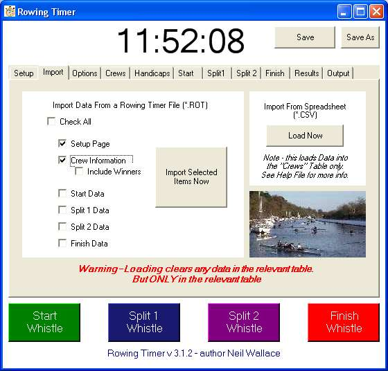

Import
When you save a rowing timer file - it saves everything. Times - Crew names, handicaps, penalties the lot.
However, you may not wish to reload all of this data.
So when you import, you can either "check all" and load the entire file, or load selectively.
This is useful if you use more than one PC for any one event, (where you load start from one, and split1 from another) .
Or perhaps if your same set of crews race frequently. (Open last the same file, but only the crew information)
The other button on this page allows import from excel - click HERE for details.
